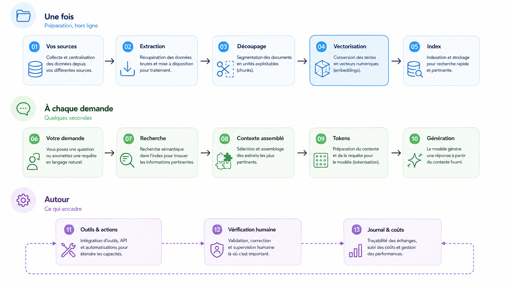

Une instruction ponctuelle dans une conversation. On repart de zéro à chaque fois.
Découverte · modules 00 à 08
2
Les assistants
Méthode, connaissance métier et documents de l'entreprise injectés une fois pour toutes.
Découverte · modules 09 à 11
3
Agents & développements
Outils métier connectés, workflows, automatisation. L'IA agit, plus seulement elle répond.
Parcours avancé
Trois parcours, dans l'ordre.
On commence par comprendre d'où vient l'IA. Le deuxième s'adresse à tout le monde. Le troisième ne s'ouvre qu'après.
Une séance de 45 min · à faire avant le module 00 · aucun prérequis
Comprendre d'où vient l'IA évite deux erreurs symétriques : croire que tout est nouveau, et croire que rien n'a changé. Cette séance ne sert pas à réciter des dates. Elle sert à savoir ce qu'un modèle peut faire, ce qu'il ne peut pas faire, et pourquoi.
Cent ans, une douzaine de noms.
Le même projet — faire faire à une machine ce qui demande de l'intelligence — a changé d'étiquette à chaque fois que la précédente s'est dévaluée.
1922
Le besoin de prévoir le temps · le point de départ
Tout commence par une demande que personne ne sait satisfaire. Prévoir le temps est un problème aux conditions initiales : connaissez l'état de l'atmosphère et ses équations, et vous calculez celui de demain. C'est la définition même d'un modèle prédictif — et à l'époque, personne n'a la puissance de calcul pour le faire.
En 1922, Lewis Fry Richardson essaie, à la main. Il découpe l'atmosphère en cellules et résout les équations case par case. Il lui faut des semaines pour quelques heures de prévision — et le résultat est faux. Il imagine alors une « usine à prévisions » : un amphithéâtre de 64 000 calculateurs humains travaillant en parallèle sous la direction d'un chef d'orchestre.[8]
C'est de là que vient le reste. Richardson n'avait pas la machine ; c'est ce besoin, précisément, qui justifiera de la construire. Von Neumann citera la prévision météorologique parmi les raisons de bâtir un calculateur.
Modélisation · problème aux conditions initiales
1946 — 1958
La machine à prédire · trois usages qui font tout basculer
Los Alamos, fin des années 1940 — la simulation statistique. Ulam et von Neumann mettent au point la méthode dite de Monte-Carlo : quand un problème est trop complexe pour être résolu, on le fait tourner des milliers de fois au hasard et on lit la distribution des résultats. Prédire cesse d'être « calculer la réponse » pour devenir « estimer une probabilité ».
Mars 1950 — la météo aboutit. Charney, Fjørtoft et von Neumann réussissent la première prévision numérique du temps sur l'ENIAC. Vingt-quatre heures de prévision cohérente, obtenues en plusieurs semaines de calcul. Le vœu de Richardson est exaucé vingt-huit ans plus tard.[9]
4 novembre 1952 — la prédiction devient publique. Sur CBS, un UNIVAC I annonce en début de soirée, à partir d'un échantillon de bulletins, une victoire écrasante d'Eisenhower : 438 grands électeurs contre 93, à 100 contre 1 — alors que l'institut Gallup annonçait un scrutin serré. Les opérateurs jugent la prédiction trop risquée et refusent de la diffuser. Résultat final : 442 contre 89. La machine avait raison, les humains n'ont pas osé la croire.[13]
1956 — la prédiction entre dans l'économie. Bill Fair et Earl Isaac fondent leur société avec, selon ses propres termes, « deux types intelligents et un ordinateur emprunté ». Deux ans plus tard, ils livrent le premier système de score de crédit : une décision financière prise sur un calcul statistique plutôt que sur l'avis d'un guichetier. C'est le premier usage de masse, quotidien et commercial, de la prédiction par données.[13]
Simulation · prévision numérique · scoring
1963
Lorenz découvre la limite · par accident
Edward Lorenz relance une simulation météo en saisissant ses valeurs de départ arrondies à trois décimales au lieu de six. La trajectoire diverge complètement. Il vient de découvrir la sensibilité aux conditions initiales — l'effet papillon —, et avec elle une vérité qui vaut pour tous les modèles : même parfait, même avec une puissance de calcul infinie, un modèle a un horizon de prédictibilité au-delà duquel il ne dit plus rien.
C'est la réponse la plus honnête à donner quand on demande à un modèle ce qu'il ne peut pas faire. Ce n'est pas une question de version suivante.[10]
Chaos · effet papillon · limite de prédictibilité
Deuxième lignée
Jusqu'ici, une seule histoire : prévoir à partir de données et de calcul. En parallèle, dès les années 1940, une autre lignée avance — celle qui prendra le nom d'intelligence artificielle. Les deux ne se rejoindront qu'en 2012.
1948 — 1955
La cybernétique · avant même le mot « IA »
En 1948, Norbert Wiener publie Cybernetics et pose l'idée de machines qui se régulent par rétroaction. En 1950, Alan Turing écrit Computing Machinery and Intelligence et remplace la question « une machine peut-elle penser ? » par un test observable : le jeu de l'imitation.[12]
Cybernétique · machines pensantes
1956 — 1973
L'invention du nom · et les premières promesses
Été 1956, conférence de Dartmouth : John McCarthy forge l'expression artificial intelligence, en partie pour se démarquer de la cybernétique. Rosenblatt présente le perceptron en 1957, premier réseau de neurones apprenant. En 1966, ELIZA imite un psychothérapeute avec quelques règles — et convainc déjà des utilisateurs, ce qui reste la plus vieille leçon du domaine sur notre tendance à prêter une intention à une machine.[12]
Les promesses dépassent largement les résultats. En 1969, Minsky et Papert démontrent les limites du perceptron simple : le connexionnisme est gelé pour quinze ans.[12]
Intelligence artificielle · connexionnisme
1974 — 1980
Premier hiver de l'IA
Le rapport Lighthill (1973) juge les résultats décevants au regard des financements. Crédits coupés au Royaume-Uni puis aux États-Unis. Le mot « intelligence artificielle » devient difficile à prononcer devant un financeur — première dévaluation d'étiquette.[12]
On évite le mot
1980 — 1987
Les systèmes experts · l'IA qui rapporte enfin
Retour par l'industrie : des règles écrites à la main par des experts, dans un domaine étroit. MYCIN diagnostique des infections, XCON configure des ordinateurs chez DEC et fait économiser des dizaines de millions de dollars. Le Japon lance son programme « cinquième génération ». C'est la première IA réellement déployée en entreprise.
Sa faiblesse est structurelle : chaque règle est écrite à la main, et le système ne sait rien faire hors de son domaine.
Systèmes experts · IA symbolique · ingénierie de la connaissance
1987 — 1993
Second hiver de l'IA
Le marché des machines spécialisées s'effondre, les systèmes experts se révèlent coûteux à maintenir. Deuxième dévaluation du mot. Les chercheurs se rebaptisent : on ne fait plus de l'IA, on fait de l'apprentissage automatique, de la reconnaissance de formes, des systèmes à base de connaissances.
Le mot devient un repoussoir
1993 — 2011
Les données prennent le pouvoir · et la statistique change de nom
Le paradigme s'inverse : au lieu d'écrire les règles, on les fait apprendre à partir d'exemples. C'est la décennie du machine learning, de la fouille de données et du KDD. En 1997, Deep Blue bat Kasparov — par la force de calcul, pas par la compréhension.
Côté métier, la lignée est parallèle : informatique décisionnelle dans les années 1990, puis big data à partir de 2008 quand le volume devient le problème central.
Machine learning · data mining · business intelligence · big data
1974 · 2001 · 2008
Le mot « data science » · trois naissances
Peter Naur, en 1974, propose « data science » comme autre nom pour l'informatique, dans Concise Survey of Computer Methods. En 2001, le statisticien William S. Cleveland publie Data Science: An Action Plan for Expanding the Technical Areas of the Field of Statistics et en fait une discipline à part entière. Vers 2008, chez LinkedIn et Facebook, le titre de data scientist apparaît pour des profils qui n'étaient ni statisticiens ni informaticiens.[11]
À retenir pour la suite : la data science n'est pas l'ancêtre de l'IA générative, c'est sa cousine. L'une explique et prédit à partir de vos données ; l'autre génère du texte à partir d'un modèle pré-entraîné sur des données qui ne sont pas les vôtres. Confondre les deux est l'erreur de cadrage la plus fréquente en entreprise.
Data science · data scientist
2012 — 2016
L'apprentissage profond · le moment où ça marche
2012, AlexNet pulvérise le concours ImageNet grâce à des cartes graphiques. Trois ingrédients convergent enfin : des données en masse, de la puissance de calcul abordable, et des algorithmes connus depuis les années 1980 mais jusque-là inexploitables. En 2016, AlphaGo bat Lee Sedol au go, dix ans plus tôt que prévu.
Deep learning · apprentissage profond · réseaux de neurones
2017 — 2022
Les transformeurs · et l'accès grand public
2017 : l'article Attention Is All You Need introduit l'architecture Transformer, qui permet d'entraîner sur des textes à une échelle inédite. Suivent BERT, puis la famille GPT. Le 30 novembre 2022, ChatGPT ouvre la technologie au grand public — et c'est cette date, pas une percée scientifique, qui fait basculer les entreprises.[12]
Grands modèles de langue · LLM · IA générative
2023 — 2026
Les agents · là où nous en sommes
Les modèles cessent de seulement répondre : ils appellent des outils, lisent des fichiers, enchaînent des étapes. Le vocabulaire se démultiplie encore — IA agentique, agents experts, copilotes. Le Hub France IA relève que chaque entreprise choisit sa propre terminologie selon sa stratégie de déploiement.[3]
En parallèle, le cadre arrive : le règlement européen sur l'IA (UE 2024/1689) est adopté, et son article 4 rend la maîtrise de l'IA obligatoire pour les employeurs depuis le 2 février 2025.[7]
IA agentique · agents experts · copilotes
La boucle est bouclée
En 2023, GraphCast, un modèle d'apprentissage produit par DeepMind et publié dans Science, bat le meilleur système de prévision opérationnel au monde sur la grande majorité des mesures — et sort une prévision à dix jours en moins d'une minute, là où un modèle physique demande des heures de supercalculateur. Entre 2025 et 2026, ces modèles sont passés de l'expérimentation à la production.[6][1]
Autrement dit : la première application de la modélisation prédictive par ordinateur, celle qui a justifié la construction des premiers centres de calcul, vient d'être reprise par l'apprentissage automatique. Richardson avait raison sur la méthode. Il lui manquait la machine, et cent ans.
La leçon de la frise
Le domaine a changé de nom une douzaine de fois en soixante-dix ans, presque toujours après une déception. Quand vous entendez un mot nouveau — agentique, copilote, IA souveraine — la bonne question n'est pas « qu'est-ce que ça veut dire ? » mais « qu'est-ce que ça fait que le précédent ne faisait pas ? ». Souvent, rien.
Pourquoi maintenant, et pas en 1990.
Les idées avaient trente ans d'avance sur les moyens. Trois courbes se sont croisées.
1Les données
Le web, puis les smartphones, puis les capteurs. La rétropropagation était connue en 1986 ; ce qui manquait, c'étaient des milliards d'exemples à lui donner.
2Le calcul
Les cartes graphiques, conçues pour le jeu vidéo, se révèlent parfaites pour entraîner des réseaux de neurones. AlexNet en 2012 tourne sur deux GPU grand public.
3L'architecture
Le Transformer, en 2017, permet enfin de paralléliser l'entraînement sur du texte. Sans lui, pas de modèle à des centaines de milliards de paramètres.
Ce que les entreprises françaises en font déjà
Part des projets d'IA générative qui vont jusqu'en production. Enquête Hub France IA, quatrième trimestre 2024.[2]
Délai entre l'idée et la mise en production : 0 à 3 mois pour les TPE et PME, 6 mois pour les ETI. Les petites structures ne sont pas en retard sur ce sujet — elles vont plus vite, parce qu'elles décident plus vite.
Gouvernance : c'est là que le retard est réel
Part des entreprises ayant mis en place une feuille de route IA. Même enquête.[2]
Comparez les deux graphiques : une TPE sur deux met de l'IA en production, mais moins d'une sur cinq a écrit une feuille de route — et seulement 14 % ont une charte d'usage, contre 73 % des ETI. C'est exactement le trou que comble le module 03 du parcours découverte.
Le chemin de vos données.
De votre fichier jusqu'à la réponse, puis jusqu'à la trace qu'il en reste. Cliquez sur une étape : ce qui s'y passe, où vont vos données, et ce qui casse.

Une foisPréparation, hors ligne
À chaque demandeQuelques secondes
AutourCe qui encadre
Ce que ce schéma change dans une conversation
La question « est-ce que mes données servent à entraîner le modèle ? » n'a pas de réponse unique : elle dépend de l'étape. Aux étapes 01 à 05, vos données sont copiées et stockées chez quelqu'un. À l'étape 08, elles partent dans la demande. À l'étape 10, elles ne modifient pas le modèle — sauf si le contrat le prévoit. Savoir de quelle étape on parle est ce qui distingue une règle d'usage sérieuse d'une interdiction générale et inapplicable.
Qui fait quoi dans la machine.
Les treize étapes ci-dessus sont un trajet. Voici les briques logicielles qui l'exécutent : ce que chacune fait, et comment elle s'y prend.
RNréseau de neurones — les trois seules briques qui en sont unCliquez sur une brique : ce qu'elle fait, et comment.
Où sont les réseaux de neurones là-dedans ?
Sur ces douze briques, trois seulement sont des réseaux de neurones : le modèle de vectorisation à l'étape 04, le re-classement à l'étape 07, et le modèle de langage à l'étape 10. Les neuf autres sont du logiciel ordinaire — des connecteurs, une base de données, une table de correspondance, de la concaténation de texte, de la journalisation. On pourrait les écrire sans aucune intelligence artificielle.
Cela explique la suite. Une seule brique est celle à laquelle tout le monde pense — le modèle, à l'étape 10 — et c'est aussi la plus facile à remplacer : quelques lignes de configuration. Les projets qui déçoivent achoppent presque toujours ailleurs : sur un découpage inadapté aux documents, sur une recherche qui remonte le mauvais passage, ou sur un assembleur qui tronque le contexte sans le dire. Aucun de ces trois n'est un réseau de neurones, et changer de modèle n'en répare aucun.
Ce qu'il y a dans la boîte.
Cinq idées, aucune équation. Chacune sert à comprendre une limite que vous rencontrerez pour de vrai.
Un réseau de neurones, en une image
Cliquez sur une partie du schéma. Attention : ce n'est pas un cerveau — l'analogie biologique induit plus en erreur qu'elle n'aide.
Cinq parties cliquables — entrées, poids, neurone, couches, sortie.
Ce qui sort vraiment : une distribution, pas une réponse
Un modèle de langue ne choisit pas un mot : il attribue une probabilité à tous les mots possibles, puis en tire un. Comparez les deux cas.
Le mécanisme
La limite qu'il explique
La sortie est une distribution : il y a toujours un mot le plus probable, même quand la bonne réponse n'existe pas.
Limite 01 — il ne sait pas qu'il ne sait pas. Il n'existe pas de sortie « je ne sais pas » : ce n'est pas un oubli des concepteurs, c'est la forme même du système.
Les poids sont figés à la fin de l'entraînement. Rien de ce que vous écrivez ne les modifie.
Limite 02 — il ne connaît pas votre entreprise. Et limite 04 — il n'a pas de mémoire : ce qui ressemble à de la mémoire est du texte qu'on lui redonne à chaque fois.
Un neurone fait une addition pondérée, pas une opération arithmétique symbolique. Le modèle a appris à quoi ressemble un calcul juste.
Limite 03 — il ne calcule pas, il imite du calcul. D'où l'obligation de recalculer les totaux, ou de lui donner un outil qui calcule réellement.
Les poids encodent les régularités du corpus d'entraînement, y compris celles qu'on aurait préféré ne pas apprendre.
Limite 05 — il reproduit les biais de ses données. Le biais n'est pas ajouté après coup : il est dans les poids.
Le mot suivant est tiré au sort dans la distribution, pas pris systématiquement en tête.
Limite 06 — il n'est pas déterministe. Deux fois la même demande, deux réponses. C'est réglable, pas supprimable.
Chaque couche compose ce que la précédente a repéré ; la profondeur crée des représentations de plus en plus abstraites.
Ce qui explique la puissance, et pourquoi personne ne peut dire précisément pourquoi une réponse est sortie plutôt qu'une autre.
Deux mots que vous entendrez, maintenant définis
Rétropropagation. La méthode d'entraînement : on compare la sortie à la bonne réponse, on mesure l'erreur, et on remonte le réseau à l'envers pour corriger légèrement chaque poids dans le sens qui réduit cette erreur. Répété des milliards de fois. Connue depuis 1986, inexploitable jusqu'à ce que les données et les cartes graphiques arrivent.
Poids ouverts, ou open weights. Quand un laboratoire publie les valeurs numériques apprises par son modèle, n'importe qui peut le télécharger et le faire tourner chez soi. C'est ce qui distingue GLM-5.2 ou DeepSeek des modèles accessibles uniquement par l'interface d'un fournisseur — et c'est la seule voie réaliste si vos données ne doivent pas sortir.
Sur quoi ça tourne.
Les poids et les couches du réseau ne flottent pas dans le vide. Ils vivent dans un bâtiment, sur des machines, alimentés par un réseau électrique. Huit couches, de la terre jusqu'à votre écran.
Votre application
L'interface où vous tapez : navigateur, application mobile, module intégré à votre logiciel métier. C'est la seule couche que la plupart des utilisateurs verront jamais.
Ce qu'elle impose — tout ce qui est en dessous vous est invisible, y compris la localisation réelle du traitement.
L'API
Le point d'entrée technique : authentification, quotas, facturation au jeton, journalisation. C'est là que se décide qui a le droit d'appeler quoi, et à quel coût.
Ce qu'elle impose — sans limite fixée ici, une boucle mal écrite peut consommer un budget mensuel en une nuit.
Le service d'inférence
Le logiciel qui fait tourner le modèle : il regroupe les demandes de plusieurs utilisateurs pour occuper les processeurs graphiques au maximum, garde en mémoire les débuts de conversation identiques, et compresse les poids pour aller plus vite.
Ce qu'elle impose — c'est la couche qui explique pourquoi le même modèle peut coûter cinq fois moins cher chez un fournisseur que chez un autre.
L'orchestration
Le chef d'orchestre : il répartit les tâches sur des milliers de machines, redémarre ce qui tombe, isole les clients les uns des autres.
Ce qu'elle impose — c'est ici que se joue la promesse de séparation entre vos données et celles d'un autre client.
Le réseau interne
Un très grand modèle ne tient pas sur une seule carte : il est découpé sur des dizaines de processeurs qui doivent se parler en permanence, à des débits considérables. C'est souvent le réseau, pas le calcul, qui fixe la vitesse.
Ce qu'elle impose — on ne peut pas simplement « ajouter des cartes » : il faut les relier, et c'est la partie la plus difficile.
Le calcul
Les processeurs graphiques et leurs puces mémoire à très haut débit. C'est le composant rare, cher, et concentré : la capacité mondiale a été multipliée par 3,3 chaque année depuis 2022, et un seul fondeur taïwanais fabrique la quasi-totalité des puces qui font tourner l'IA de pointe.[1]
Ce qu'elle impose — la dépendance matérielle est le point de fragilité le plus concret de toute la chaîne.
Le refroidissement
Toute l'électricité consommée finit en chaleur. Il faut l'évacuer : air brassé, air extérieur quand le climat le permet, ou liquide amené directement au contact des puces — de plus en plus indispensable à mesure que les cartes chauffent.
Ce qu'elle impose — l'eau. La consommation annuelle d'eau liée à l'inférence d'un seul modèle grand public pourrait dépasser les besoins en eau potable de 1,2 million de personnes.[1]
Le site et l'électricité
Un terrain, un bâtiment, et surtout un raccordement au réseau électrique — le vrai facteur limitant aujourd'hui. La puissance installée des centres de données dédiés à l'IA atteint 29,6 GW, comparable à la consommation de pointe de l'État de New York.[1]
Ce qu'elle impose — on n'installe pas un centre de données où l'on veut : on l'installe où il y a du courant disponible.
Ce que ça coûte à la planète.
Deux échelles à ne jamais confondre : ce que coûte votre requête, et ce que coûte l'ensemble.
0,24Wh par requête texte
Mesure publiée par Google pour une requête médiane sur Gemini, avec 0,03 g de CO₂e et 0,26 mL d'eau. À comparer aux 0,2 à 0,3 Wh d'une recherche web classique.[14]
Votre cerveau consomme environ 20 W en continu, soit 480 Wh par jour.[18] Une requête, c'est donc 43 secondes de cerveau humain — et il faudrait 2 000 requêtes pour égaler une seule de vos journées de réflexion.
0,34Wh, autre estimation
Ordre de grandeur avancé publiquement par OpenAI. La fourchette raisonnable pour une requête texte se situe donc entre 0,24 et 0,34 Wh.[14]
Soit une minute de cerveau, ou trois minutes d'une ampoule LED de 7 W. Recharger entièrement un téléphone en consomme quarante fois plus.
72 816tonnes de CO₂e
Émissions estimées du seul entraînement de Grok 4, en 2025. L'entraînement est un coût unique, mais colossal — et de moins en moins documenté.[1]
L'empreinte carbone moyenne d'un Français est de 8,2 tonnes par an.[17] Entraîner ce seul modèle a donc émis autant que 8 900 Français pendant un an — l'équivalent d'une ville comme Chantilly ou Sanary-sur-Mer.
≈ 945TWh en 2030
Projection de l'Agence internationale de l'énergie pour la consommation électrique mondiale des centres de données — environ le double du niveau actuel.[15]
La France entière a consommé 451 TWh d'électricité en 2025.[16] Les centres de données consommeront donc plus de deux fois la France, chauffage, industrie, transports et tous les foyers compris.
Comment lire ces chiffres sans se tromper
À l'échelle d'une requête, l'impact est faible. Une question à un assistant coûte à peu près autant qu'une recherche web. Culpabiliser un salarié qui pose trois questions par jour n'a aucun sens : sa consommation est inférieure à celle de son écran allumé pendant la même minute.
À l'échelle mondiale, l'impact est massif. Ce ne sont pas les mêmes personnes qui décident des deux. Le total vient du nombre de requêtes multiplié par le nombre d'utilisateurs, et de l'entraînement des modèles — pas de votre usage individuel.
Le levier utile en entreprise n'est pas d'utiliser moins l'IA, c'est de ne pas envoyer trente pages à chaque question. C'est exactement l'étape 09 du chemin des données : ce qui gonfle la facture gonfle aussi la consommation. Régler le curseur d'effort et limiter le contexte agit sur les deux à la fois.
Trois raisons de rester prudent avec ces chiffres
Ils viennent en partie des fournisseurs eux-mêmes. L'étude sur les 0,24 Wh est interne à Google, sa méthodologie est discutée, et des audits indépendants sont réclamés. Le périmètre compte énormément : compte-t-on le refroidissement ? les machines à l'arrêt ? l'amortissement de l'entraînement ?
La transparence recule. Le code d'entraînement, le nombre de paramètres, la taille des jeux de données et la durée d'entraînement ne sont plus publiés pour plusieurs des systèmes les plus gourmands, chez OpenAI, Anthropic comme Google.[1] Autrement dit : on communique volontiers sur le coût d'une requête, beaucoup moins sur celui de l'entraînement.
Les sources se contredisent sur le présent. Pour la consommation mondiale des centres de données en 2025, on trouve aussi bien 485 TWh que 787 TWh selon le périmètre retenu. Les projections à 2030 convergent, le point de départ non. Citez toujours la source avec le chiffre.
Ce qu'un modèle ne sait pas faire.
Les limites ne sont pas des bugs à corriger dans la prochaine version. Elles découlent de la façon dont ces modèles sont construits.
LIMITE 01
Il ne sait pas qu'il ne sait pas
Un modèle produit le texte le plus plausible, pas le plus vrai. Il n'a aucun mécanisme interne pour signaler qu'il invente. C'est ce qu'on appelle une hallucination — et c'est le risque n°1 cité par les TPE, les PME et les ETI dans l'enquête Hub France IA.[2]
Conséquence — tout chiffre, nom, date ou citation doit être vérifié. C'est le module 07.
LIMITE 02
Il ne connaît pas votre entreprise
Il a été entraîné sur des données publiques arrêtées à une date. Vos tarifs, vos contrats, vos procédures, vos clients : il n'en sait rien. S'il répond quand même précisément, c'est qu'il invente.
Conséquence — il faut lui donner le contexte, ou le brancher sur vos données. C'est les modules 09 et avancé 04.
LIMITE 03
Il ne calcule pas, il imite du calcul
Un modèle de langue prédit des mots. Un total, un pourcentage ou une date calculée sont produits par ressemblance, pas par arithmétique — sauf s'il dispose d'un outil qui, lui, calcule vraiment.
Conséquence — recalculez toujours un total. C'est le module 08.
LIMITE 04
Il n'a pas de mémoire par défaut
Hors d'un espace configuré, chaque conversation repart de zéro. Ce qui ressemble à de la mémoire est en réalité du contexte qu'on lui redonne à chaque fois, dans une fenêtre limitée.
Conséquence — un espace de travail par sujet récurrent. C'est le module 09.
LIMITE 05
Il reproduit les biais de ses données
Ce qui est surreprésenté dans le corpus d'entraînement est surreprésenté dans les réponses. Les ETI citent la reproduction de biais parmi leurs deux principaux risques.[2]
Conséquence — méfiance particulière sur tout ce qui touche aux personnes : recrutement, évaluation, sélection.
LIMITE 06
Il n'est pas déterministe
La même demande peut donner deux réponses différentes. C'est une propriété, pas un défaut — mais elle interdit de bâtir un processus critique sur une réponse unique non contrôlée.
Conséquence — pour un usage répétable, il faut un modèle de demande figé et une vérification. C'est le module 10.
Ce que l'IA fait gagner, et où.
Des chiffres mesurés, pas des promesses de fournisseur. Chaque ligne renvoie à sa source, en bas de page.
Domaine
Gain mesuré
Ce qui est mesuré
Source
Service client
+14 % de productivité +34 % pour les débutants
Tickets résolus par heure, sur 5 179 agents d'un centre de support. L'effet est quasi nul sur les agents les plus expérimentés : l'outil diffuse les pratiques des meilleurs vers les moins aguerris.
jusqu'à −83 % de temps +112 % de retour sur investissement
Temps passé par les médecins à rédiger leurs comptes rendus de consultation, dans plusieurs systèmes hospitaliers, avec une baisse significative de l'épuisement professionnel. Le retour sur investissement est celui déclaré par un système hospitalier.
Cas cliniques difficiles tirés de la littérature. Un système multi-agents contre des médecins privés de leurs outils habituels — la comparaison n'est donc pas celle d'une consultation réelle.
FourCastNet 3 produit une prévision mondiale à 60 jours en moins de 4 minutes. En 2025, un système a pour la première fois remplacé toute la chaîne de prévision numérique.
Publications liées à l'IA en sciences naturelles en 2025. L'IA représente désormais 5,8 % à 8,8 % de la production scientifique selon les disciplines, contre moins de 1 % en 2010.
Les gains se concentrent là où le travail est structuré et mesurable. Ils sont nettement plus faibles sur les tâches qui demandent un raisonnement approfondi. Une même étude peut donc afficher +50 % sur un métier et rien du tout sur un autre.[1]
Le gain n'est pas également réparti. L'effet le plus fort porte sur les personnes les moins expérimentées ; il est quasi nul sur les plus aguerries. Ce n'est pas un détail : cela change qui, dans une équipe, a le plus à gagner à être formé en premier.[5]
Il y a un revers documenté. L'emploi des développeurs de 22 à 25 ans a chuté de près de 20 % depuis 2024, et un tiers des organisations s'attendent à réduire leurs effectifs dans l'année. Des travaux récents signalent aussi qu'un recours massif à l'IA peut freiner l'acquisition de compétences sur le long terme.[1]
Un chiffre que je ne vous donnerai pas
On lit partout que l'IA réduirait de 20, 40 ou 75 % le temps de développement d'un médicament. Je n'ai trouvé aucune source solide pour l'étayer. Ces pourcentages circulent d'article de blog en article de blog, sans étude publiée derrière.
Ce qui est établi, en revanche : la FDA a autorisé 258 dispositifs médicaux à base d'IA en 2025, mais seuls 2,4 % de ceux qui s'appuient sur des études cliniques le font sur la base d'essais randomisés — la grande majorité passe par des procédures de modification s'appuyant sur des preuves existantes.[1] C'est exactement le genre de nuance qu'un chiffre rond fait disparaître.
La règle vaut au-delà de cet exemple : quand un pourcentage n'est rattaché à aucune étude nommée, ne le reprenez pas. C'est le module 07 appliqué à votre propre communication.
Mythes et réalité.
Six affirmations qu'on entend en réunion, et ce que disent les chiffres.
Le mythe
« L'IA va remplacer les emplois de mon équipe. »
La réalité
Les bénéfices réellement obtenus par les entreprises interrogées sont le gain de temps et le gain de productivité — pas la suppression de postes. Ce qui disparaît, ce sont des tâches : mise en forme, première rédaction, synthèse. Le travail se déplace vers la vérification et la décision.
Le mythe
« C'est une bulle, ça va passer comme la blockchain. »
La réalité
Le domaine a déjà connu deux hivers, en 1974 et en 1987 — donc l'objection est légitime. La différence tient à l'usage : entre 52 % et 91 % des projets d'IA générative vont jusqu'en production selon la taille d'entreprise, et les utilisateurs déclarent une satisfaction de 3,5 à 4 sur 5. Ce n'est pas le profil d'une technologie qu'on n'utilise pas.[2]
Le mythe
« Il faut être une grande entreprise pour s'y mettre. »
La réalité
Les TPE et PME passent de l'idée à la production en 0 à 3 mois, contre 6 mois pour les ETI. Leur difficulté n'est pas la taille, c'est le manque d'expertise technique — cité en tête par les TPE comme par les PME.[2]
Le mythe
« Les agents vont tout automatiser tout seuls. »
La réalité
Gartner prévoit que plus de 40 % des projets d'IA agentique seront annulés d'ici fin 2027. Beaucoup de produits présentés comme des agents sont en réalité des assistants sans outils, sans droits d'action et sans orchestration. L'autonomie n'est pas l'absence de supervision.[3]
Le mythe
« Le meilleur modèle du classement est le bon choix. »
La réalité
Passer de 51 à 61 points d'intelligence multiplie le coût par tâche par environ sept. Pour la plupart des usages de rédaction, de support ou de synthèse, l'écart de qualité ne justifie pas l'écart de facture. La bonne question est le score minimum acceptable pour votre tâche.[4]
Le mythe
« L'IA comprend ce qu'elle dit. »
La réalité
Elle prédit la suite la plus probable. ELIZA convainquait déjà des utilisateurs en 1966 avec quelques règles de réécriture : notre tendance à prêter une intention à une machine est plus vieille que la technologie. C'est utile de le savoir avant de lui faire confiance.
Qui fait quoi, aujourd'hui.
Le paysage au 2 août 2026. Il bougera : la méthode de lecture compte plus que le classement.[4]
Acteur
Modèles phares
Ce sur quoi il est bon
Anthropic
Claude Opus 5, Fable 5, Sonnet 5
Tête du classement d'intelligence et huit places sur vingt. Avantage net sur les tâches agentiques et le code ; moins net dès qu'on regarde le coût.
OpenAI
GPT-5.6 Sol, Terra, Luna
Segmentation en trois lignes : la plus intelligente, la plus rapide, la moins chère. Trois arbitrages différents là où d'autres poussent un seul haut de gamme.
Google
Gemini 3.5 Flash
Joue le débit et la latence plutôt que le score brut. Pensé pour le volume.
Moonshot (Kimi)
Kimi K3
7e du classement pour environ deux fois moins cher que le 2e. Les laboratoires chinois ne sont plus dans le peloton.
Z AI
GLM-5.2
Meilleur modèle à poids ouverts du classement. Pertinent si vous voulez héberger vous-même.
DeepSeek
DeepSeek V4 Pro
Environ 72 % du score du leader pour à peu près cinquante fois moins cher. Casse la courbe intelligence-prix.
Meta
Muse Spark 1.1
Réponses très appréciées des votants humains, scores d'examen plus modestes. L'écart typique entre préférence et capacité.
Mistral
Large 3
Option européenne, à considérer d'abord pour des raisons de souveraineté et d'hébergement.
Intelligence contre coût, au 2 août 2026
Chaque point est un modèle. Plus il est haut, plus il réussit de tâches difficiles du premier coup ; plus il est à droite, plus il coûte cher. L'axe des coûts est logarithmique — d'un bout à l'autre, le prix est multiplié par cinquante.[4]
Trois choses se voient d'un coup d'œil. La courbe s'aplatit à droite : passer de 51 à 61 points multiplie la facture par sept environ. Le même modèle apparaît plusieurs fois — Claude Opus 5 en effort maximal est à 2,03 $, le même en effort faible à 0,36 $ pour dix points de moins : avant de changer de modèle, réglez le curseur d'effort du vôtre. La zone bleue est celle qui compte pour la plupart des usages de rédaction, de support ou de synthèse.
Deux classements, deux questions différentes
Artificial Analysis fait passer des examens aux modèles ; Arena fait voter des humains sur des réponses anonymisées. Le premier mesure une capacité, le second une préférence. Si votre usage est conversationnel — support, rédaction, assistance —, regardez Arena. S'il est technique ou agentique — code, analyse de documents, extraction —, regardez Artificial Analysis. Et rappelez-vous qu'aucun classement ne mesure votre métier.[4]
Dernier réflexe, appris en juin 2026 quand un modèle de tête a été suspendu pendant deux semaines pour des raisons de contrôle à l'export : prévoyez toujours un modèle de repli avant d'en avoir besoin.
1
Quand un mot nouveau apparaît, demandez ce qu'il fait que le précédent ne faisait pas.
2
Une limite n'est pas un bug : elle vient de la façon dont le modèle est construit.
3
Le modèle numéro un n'est presque jamais le bon choix par défaut.
4
Deux hivers ont déjà eu lieu. Ce qui compte, c'est l'usage réel, pas la promesse.
Sources et références.
Toute affirmation chiffrée ou datée de cette page renvoie à l'une des références ci-dessous. Si un énoncé n'a pas d'appel de note, c'est qu'il s'agit d'une interprétation pédagogique et non d'un fait sourcé.
Stanford HAI — The 2026 AI Index Report, neuvième édition. Chapitres Technical Performance, Economy, Science et Medicine. Consulté le 9 août 2026. hai.stanford.edu/ai-index/2026-ai-index-report Adoption organisationnelle 88 % · adoption grand public 53 % en trois ans · gains de 14-15 % en service client, 26 % en développement logiciel, 50 % en marketing · −83 % de temps de rédaction clinique et 112 % de retour sur investissement · 85,5 % contre 20 % en diagnostic · essai diabète sur 150 patients · 258 dispositifs médicaux autorisés par la FDA en 2025 et 2,4 % appuyés sur des essais randomisés · FourCastNet 3 et prévision météo de bout en bout · +26 % de publications scientifiques · emploi des développeurs de 22-25 ans en baisse de près de 20 % · un tiers des organisations anticipant une réduction d'effectifs · frontière déchiquetée (médaille d'or à l'Olympiade de mathématiques, 50,1 % de lecture d'horloge) · 362 incidents documentés.
Hub France IA — Adoption de l'IA générative par les TPE et PME, résultats clés de l'enquête, Pierre Monget, 4 décembre 2024. 43 réponses retenues (21 TPE, 11 PME, 11 ETI de référence), diffusion du 28 octobre au 27 novembre 2024. 52 % / 64 % / 91 % de projets allant en production · délai idée-production de 0 à 3 mois (TPE-PME) et 6 mois (ETI) · feuille de route 19 % / 45 % / 73 % · charte d'usage 14 % (TPE) et 73 % (ETI) · hallucinations citées comme risque principal par les trois catégories · reproduction de biais citée par les ETI · bénéfices obtenus : gain de temps et de productivité · satisfaction 3,5 à 4 sur 5.Attention à l'effectif : 43 répondants. Ces chiffres décrivent une tendance, ils n'ont pas valeur statistique nationale.
Hub France IA — Livre blanc : les agents experts d'IA, 115 pages, janvier 2026. Pluralité des appellations selon les entreprises · distinction assistants conversationnels / copilotes bureautiques / agents experts · échelle d'autonomie · 450 milliards de dollars de valeur d'ici 2028 (source citée : Capgemini Research Institute, 16 juillet 2025) · 33 % des applications d'entreprise intégrant l'IA agentique d'ici 2028 contre moins de 1 % en 2024, et plus de 40 % des projets d'IA agentique annulés d'ici fin 2027 (source citée : Gartner, 25 juin 2025).
Artificial Analysis — LLM Leaderboard, Intelligence Index v4.1, relevé le 2 août 2026, repris et commenté par LeptiDigital. Index composite sur neuf évaluations indépendantes notées au premier essai, uniquement textuel et en anglais. Classement des 20 meilleurs modèles d'IA en août 2026 Scores et coûts par tâche de l'ensemble du nuage de points · positions des acteurs · écart entre Artificial Analysis et Arena · suspension d'un modèle de tête en juin 2026.Mesures recalculées en continu : les valeurs bougent de quelques points d'une semaine à l'autre. Un classement public ne mesure jamais votre métier.
Erik Brynjolfsson, Danielle Li, Lindsey R. Raymond — Generative AI at Work, National Bureau of Economic Research, document de travail n° 31161. Étude sur 5 179 agents de support client. nber.org/papers/w31161 +14 % de problèmes résolus par heure en moyenne, +34 % pour les agents débutants et peu qualifiés, effet minime sur les plus expérimentés.
Remi Lam et al. (Google DeepMind) — Learning skillful medium-range global weather forecasting, Science, 2023. Modèle GraphCast. Annonce DeepMind Modèle d'apprentissage dépassant le meilleur système opérationnel de prévision à moyen terme sur la grande majorité des mesures, prévision à dix jours produite en moins d'une minute.
Règlement (UE) 2024/1689 du Parlement européen et du Conseil établissant des règles harmonisées concernant l'intelligence artificielle. Article 4, maîtrise de l'IA. Obligation applicable depuis le 2 février 2025, sans seuil de taille et quel que soit le niveau de risque ; contrôles et sanctions possibles à partir du 2 août 2026.Information générale, sans valeur de conseil juridique.
Lewis Fry Richardson — Weather Prediction by Numerical Process, Cambridge University Press, 1922. Première tentative de prévision numérique du temps, calcul manuel par découpage de l'atmosphère en cellules ; « usine à prévisions » de 64 000 calculateurs humains.
Jule Charney, Ragnar Fjørtoft, John von Neumann — première prévision numérique du temps sur ordinateur, ENIAC, mars 1950, modèle barotrope. Synthèse : Prévision numérique du temps Prévision à 24 heures cohérente mais demandant des semaines de production ; premiers services opérationnels au début des années 1960.
Edward N. Lorenz — Deterministic Nonperiodic Flow, Journal of the Atmospheric Sciences, vol. 20, 1963. Sensibilité aux conditions initiales, effet papillon, existence d'un horizon de prédictibilité.
Origines du terme « data science » : Peter Naur, Concise Survey of Computer Methods, 1974 ; William S. Cleveland, Data Science: An Action Plan for Expanding the Technical Areas of the Field of Statistics, 2001 ; apparition du titre de data scientist vers 2008 chez LinkedIn et Facebook. Les trois naissances du terme.
Jalons fondateurs de l'IA : Norbert Wiener, Cybernetics, 1948 · Alan Turing, Computing Machinery and Intelligence, Mind, 1950 · conférence de Dartmouth et forge du terme artificial intelligence par John McCarthy, 1956 · Frank Rosenblatt, perceptron, 1957 · Joseph Weizenbaum, ELIZA, 1966 · Marvin Minsky et Seymour Papert, Perceptrons, 1969 · rapport Lighthill, 1973 · Ashish Vaswani et al., Attention Is All You Need, 2017 · ouverture de ChatGPT au public, 30 novembre 2022. Trame chronologique de la frise.
Trois usages fondateurs de la prédiction par ordinateur. UNIVAC I et l'élection présidentielle américaine du 4 novembre 1952 : prévision de 438 grands électeurs contre 93 pour Eisenhower à partir d'un échantillon de bulletins, à 100 contre 1, contre un sondage Gallup annonçant un scrutin serré ; résultat final 442 contre 89 ; diffusion retenue le soir même par les opérateurs. Engineering and Technology History Wiki · Computer History Museum Fair, Isaac and Company, fondée en 1956 par Bill Fair et Earl Isaac ; premier système de score de crédit développé en 1958. Historique publié par FICO Méthode de Monte-Carlo, mise au point à Los Alamos à la fin des années 1940 par Stanislaw Ulam et John von Neumann.
Époque « 1946 — 1958 » de la frise : simulation statistique, aboutissement de la prévision météorologique, première prédiction publique par ordinateur, et premier usage commercial de masse.
Google — rapport technique sur l'empreinte d'une requête Gemini, publié le 21 août 2025 : 0,24 Wh d'électricité, 0,03 g de CO₂e et 0,26 mL d'eau pour une requête texte médiane, et une division par 33 de l'énergie par requête entre mai 2024 et mai 2025. Billet Google — méthodologie de mesure Énergie, eau et carbone par requête · comparaison avec une recherche web classique (0,2 à 0,3 Wh) · ordre de grandeur de 0,34 Wh avancé publiquement par OpenAI.Étude interne au fournisseur, méthodologie contestée, audits indépendants réclamés. Le périmètre retenu (refroidissement, machines à l'arrêt, amortissement de l'entraînement) change fortement le résultat.
Agence internationale de l'énergie — rapport d'avril 2026 sur l'électricité et les centres de données. Projection d'environ 945 à 950 TWh de consommation électrique mondiale des centres de données en 2030, soit environ le double du niveau actuel.Les estimations pour 2025 divergent selon les périmètres : de 485 TWh à 787 TWh selon les publications. Seule la trajectoire fait consensus.
RTE — Bilan électrique 2025, principaux résultats, publié en 2026. Bilan électrique 2025 (PDF) Consommation électrique de la France métropolitaine en 2025 : 451 TWh, corrigée des aléas météorologiques et calendaires. Sert de point de comparaison à la projection de 945 TWh pour les centres de données mondiaux en 2030.
Insee et Service des données et études statistiques — empreinte carbone de la France. L'empreinte carbone de la France de 1990 à 2024 Empreinte carbone moyenne de 8,2 tonnes équivalent CO₂ par personne en 2024, dont la moitié associée aux importations. Sert au calcul de l'équivalence des 72 816 tonnes d'un entraînement.L'empreinte inclut les émissions importées ; les émissions territoriales par personne sont nettement plus basses. Deux chiffres différents, deux périmètres différents.
Métabolisme cérébral — consommation énergétique du cerveau humain. Le cerveau représente environ 2 % de la masse corporelle mais 20 % du métabolisme basal, soit une puissance moyenne continue d'environ 20 watts. Équivalence entre une requête à 0,24 Wh et 43 secondes de fonctionnement cérébral, et entre 2 000 requêtes et une journée de cerveau.Comparaison pédagogique, pas une équivalence fonctionnelle : un cerveau et un modèle ne font pas le même travail avec ces watts.
Comment cette page a été vérifiée
Les chiffres d'adoption française viennent de documents que l'entreprise possède déjà et dont le texte a été extrait directement. Les chiffres internationaux viennent du rapport annuel de Stanford, consulté en ligne. Le classement des modèles a été relevé à une date précise et affichée, parce qu'il change toutes les semaines.
Deux affirmations ont été écartées faute de source : la réduction chiffrée du temps de développement d'un médicament, et la répartition exacte des bénévoles par statut dans certaines organisations. Quand une source manque, la page le dit plutôt que d'arrondir.
Obligation de maîtrise de l'IA
L'article 4 du règlement européen sur l'IA (UE 2024/1689) impose aux organisations qui déploient un système d'IA de garantir un niveau suffisant de maîtrise de l'IA pour leur personnel. L'obligation s'applique depuis le 2 février 2025, sans seuil de taille et quel que soit le niveau de risque — un simple assistant conversationnel suffit à la déclencher.
Les autorités nationales, dont la CNIL, peuvent contrôler et sanctionner à partir du 2 août 2026. Ce programme et sa feuille d'émargement constituent la trace documentaire de cette formation.
4 semaines · 15 à 20 min par module · aucun prérequis technique
La matrice CRAFT.
Cinq ingrédients. C'est le cœur du module 02, et le seul modèle à retenir par cœur.
CContexte
La situation, le « pourquoi ». Entreprise en croissance ou en crise : ce n'est pas la même réponse.
RRôle
Qui l'outil doit incarner. « Tu es un RH expérimenté » oriente le niveau de technicité.
AAction
Le livrable attendu, avec un verbe clair : rédige, synthétise, analyse, compare.
FFormat
La forme du résultat : mail, tableau, 6 slides. Sans ça, l'outil choisit pour vous.
TTonalité
Le registre : professionnel, bienveillant, direct. C'est ce qui fait que le texte sonne juste.
Prérequis
Ce parcours ne s'ouvre qu'après le module 07 du parcours découverte — « Vérifier avant d'envoyer » — et après un livrable réel. Un agent ne fait pas moins d'erreurs : il en fait plus vite et sans témoin.
Le slash, deux natures.
Le cœur du module 00. Tout ce qui commence par « / » n'est pas de même nature.
1Commande intégrée
Logique fixe, codée en dur dans le CLI. Elle fait une chose précise, sans raisonnement du modèle, et n'est pas personnalisable. /clear, /compact, /model, /cost, /help.
2Skill
Capacité à base de prompt : l'invocation charge un fichier Markdown d'instructions dans le contexte, que Claude exécute — avec arguments, outils dédiés et sous-agents possibles. .claude/commands/ fonctionne toujours, .claude/skills/ est l'approche recommandée.
Un serveur MCP branché expose ses prompts sous /mcp__serveur__prompt. Les plugins exposent les leurs sous /plugin:commande.
claude.ai
Palette très réduite : /new vide le contexte, /help liste ce qui existe. Tout le reste après un « / » est soit le nom d'une skill, soit du texte ordinaire.
Deux nuances qui coûtent cher : /cd déplace la session — un /resume la retrouvera depuis le nouveau répertoire — alors que /add-dir donne l'accès sans déplacer, ce qui sert pour les monorepos. Et /branch bascule dans une copie de la conversation en préservant l'originale, sur laquelle on revient par /resume.
Validation par la preuve.
Pas de quiz. Un livrable, un chiffre, une attestation.
1
Mesure d'entrée. Module 00 : trois tâches chronométrées avant de commencer. Sans ce point de départ, le « temps gagné » de la fin n'est qu'une impression.
2
Émargement. Une feuille par session, signée par les participants et l'animateur. C'est la pièce demandée en cas de contrôle.
3
Démo finale. Module 11 : avant, après, temps gagné, chiffré. Le livrable réel est exigé, pas la conversation.
4
Attestation de fin. Délivrée le jour de la démo, avec les modules suivis, les dates et le gain mesuré. Modèle dans docs/attestation.md.
Kit formateur.
Cinq fiches pour la genèse, douze pour la découverte. Prêtes à dérouler.
Format d'une session
2 min
Le problème concret du jour — « combien de temps tu passes à… ? »
4 min
Démo en direct, écran partagé, sur un cas réel
8 min
Les participants font, l'animateur circule
3 min
Un participant montre, un autre dit ce qui cloche
Jamais de slides théoriques. Jamais le mot « prompt engineering », « token » ou « contexte » devant un débutant. On dit : Claude, la demande, le document.